AHL 3.11 — Vector equation of a line（直線のベクトル方程式）
- 直線が「通る点 \(1\) つ」と「向き \(1\) つ」で決まることを説明できる。
- \(\mathbf{r} = \mathbf{a} + \lambda\mathbf{b}\) の \(\mathbf{a}\) と \(\mathbf{b}\) が何を表すかを言える。
- \(\lambda\) に値を入れて、直線上の点を求められる。
- 同じ直線が、いくつもの式で書けることを説明できる。
- parametric form（媒介変数表示）に書き直せる。
- \(2\) 点を通る直線の式を作れる。
- ある点が直線上にあるかどうかを、全成分で判定できる。
- \(3\) 次元でも、成分が \(1\) つ増えるだけで同じ計算ができる。
- \(2\) 直線が平行かどうかを判定し、平行でないときは交点を求められる（\(3\) 次元では、平行でなくても交わらないことがある）。
The idea
1. 直線は「通る点 \(1\) つ」と「向き \(1\) つ」で決まります
紙の上に直線を \(1\) 本ひくには、\(2\) つ決めれば足ります。
- どこを通るか … 通る点を \(1\) つ
- どちらを向いているか … 向きを \(1\) つ

図 1 がその図です。式にすると
\[ \mathbf{r} = \mathbf{a} + \lambda\mathbf{b} \]
- \(\mathbf{r}\) … 直線上の点の位置ベクトル（AHL 3.10b 第2節）
- \(\mathbf{a}\) … 直線上の\(1\) 点の位置ベクトル
- \(\mathbf{b}\) … direction vector（方向ベクトル）。\(\mathbf{b} \neq \mathbf{0}\)
- \(\lambda\) … parameter（媒介変数）。どんな実数でもよい
イメージは「乗って、歩く」です。 まず \(\mathbf{a}\) の地点まで行き、そこから \(\mathbf{b}\) を \(\lambda\) 回ぶん進みます。\(\lambda\) が負なら、逆向きに進みます。
\(\mathbf{b} = \mathbf{0}\) だと、\(\lambda\) をどう変えても \(\mathbf{r} = \mathbf{a}\) のままです。点が \(1\) つあるだけで、直線にはなりません。
ですから direction vector は、いつも \(\mathbf{0}\) でないものを選びます（AHL 3.10a 第8節）。
2. \(\lambda\) を動かすと、点が直線の上を動きます
\(\mathbf{r} = \begin{pmatrix} 1 \\ 2 \end{pmatrix} + \lambda\begin{pmatrix} 3 \\ -1 \end{pmatrix}\) で、\(\lambda\) に値を入れてみます。
| \(\lambda\) | \(\mathbf{r}\) | 点 |
|---|---|---|
| \(-1\) | \(\begin{pmatrix} 1 \\ 2 \end{pmatrix} - \begin{pmatrix} 3 \\ -1 \end{pmatrix}\) | \((-2,\ 3)\) |
| \(0\) | \(\begin{pmatrix} 1 \\ 2 \end{pmatrix}\) | \((1,\ 2)\) |
| \(1\) | \(\begin{pmatrix} 1 \\ 2 \end{pmatrix} + \begin{pmatrix} 3 \\ -1 \end{pmatrix}\) | \((4,\ 1)\) |
| \(2\) | \(\begin{pmatrix} 1 \\ 2 \end{pmatrix} + 2\begin{pmatrix} 3 \\ -1 \end{pmatrix}\) | \((7,\ 0)\) |
表 1 の点は、図 1 に打ってあります。\(\lambda\) が \(1\) 増えるごとに、\(\mathbf{b}\) だけ動きます。
\(\lambda\) は、どんな実数でもかまいません。 負でも、分数でも、\(0\) でもよいので、直線は両側にどこまでも伸びます。
3. 同じ直線を、いくつもの式で書けます
これが、この項目でいちばん引っかかるところです。

図 2 を見てください。図 1 と同じ直線を、別の式で書いたものです。
\[ \mathbf{r} = \begin{pmatrix} 1 \\ 2 \end{pmatrix} + \lambda\begin{pmatrix} 3 \\ -1 \end{pmatrix} \qquad \text{と} \qquad \mathbf{r} = \begin{pmatrix} 7 \\ 0 \end{pmatrix} + \mu\begin{pmatrix} -6 \\ 2 \end{pmatrix} \]
変えてよいのは、次の \(2\) つです。
- \(\mathbf{a}\) … 直線上のどの点でもかまいません。\((7,\ 0)\) は、\(\lambda = 2\) のときの点でした
- \(\mathbf{b}\) … \(0\) でないスカラー倍なら何でもかまいません。\(\begin{pmatrix} -6 \\ 2 \end{pmatrix} = -2\begin{pmatrix} 3 \\ -1 \end{pmatrix}\) です
ですから、「答えが教科書と違う」からといって間違いとはかぎりません。 同じ直線かどうかは、第8節 の \(2\) 段の手順で調べます。
AHL 3.10b 第6節 では、\(3\mathbf{i}+4\mathbf{j}\) の長さが \(5\) であることが問題になりました。
このページでは、そこは問題になりません。 \(\mathbf{b}\) を \(2\) 倍にしても、\(\lambda\) が半分になるだけで、同じ直線が出てくるからです。
長さに意味が戻るのは AHL 3.12a です。そこでは \(\mathbf{b}\) が速度になり、その大きさが速さになります。
4. parametric form — 成分ごとに書き出す
Guidance が求めているのは、この書き換えです。
\[ \mathbf{r} = \begin{pmatrix} x_0 \\ y_0 \\ z_0 \end{pmatrix} + \lambda\begin{pmatrix} l \\ m \\ n \end{pmatrix} \qquad \Longleftrightarrow \qquad \begin{cases} x = x_0 + \lambda l \\ y = y_0 + \lambda m \\ z = z_0 + \lambda n \end{cases} \]
やっていることは、成分ごとに \(1\) 行ずつ書き出すことだけです。新しい内容はありません。
さきほどの例なら
\[ \mathbf{r} = \begin{pmatrix} 1 \\ 2 \end{pmatrix} + \lambda\begin{pmatrix} 3 \\ -1 \end{pmatrix} \qquad \Longleftrightarrow \qquad \begin{cases} x = 1 + 3\lambda \\ y = 2 - \lambda \end{cases} \]
この形にすると、\(\lambda\) を求める式が立てられます。 点が直線上にあるかの判定（第6節）も、交点（第9節）も、ここから始まります。
上の \(2\) 式から \(\lambda\) を消すと
\[ \lambda = \frac{x-1}{3} = 2-y \quad \Longrightarrow \quad x + 3y = 7 \]
中学・SL で習った直線の式に戻りました。傾きは \(-\dfrac{1}{3}\) で、これは \(\dfrac{-1}{3}\)、つまり direction vector の \(\dfrac{\text{たて}}{\text{よこ}}\) です。
この書き換えは、シラバスが求めているものではありません。 ただ、検算には使えます。 なお \(3\) 次元ではこの形は作れませんし、\(2\) 次元でも \(\mathbf{b} = \begin{pmatrix} 0 \\ 1 \end{pmatrix}\) のような縦向きの直線では傾きが定まりません。
5. \(2\) 点を通る直線

\(2\) 点 \(A\)、\(B\)（\(A \neq B\)）が与えられたら、図 3 の (a) のようにします。\(A = B\) だと \(\overrightarrow{AB} = \mathbf{0}\) になり、直線が決まりません（第1節）。
- \(\mathbf{a}\) … \(A\) でも \(B\) でも、どちらでもかまいません
- \(\mathbf{b}\) … \(\overrightarrow{AB} = \mathbf{b}-\mathbf{a}\)（AHL 3.10b 第3節）
\(A(2,\ -1)\)、\(B(6,\ 1)\) なら \(\overrightarrow{AB} = \begin{pmatrix} 4 \\ 2 \end{pmatrix}\) なので
\[ \mathbf{r} = \begin{pmatrix} 2 \\ -1 \end{pmatrix} + \lambda\begin{pmatrix} 4 \\ 2 \end{pmatrix} \tag{3}\]
\(\lambda = 0\) で \(A\)、\(\lambda = 1\) で \(B\) です。これは覚えやすい形なので、答えを書いたらこの \(2\) つを入れて確かめてください。
\(\begin{pmatrix} 2 \\ 1 \end{pmatrix}\) を direction vector にしても正解です（第3節）。ただしそのときは、\(B\) に対応する \(\lambda\) が \(2\) になります。
6. 点が直線上にあるかどうか
図 3 の (b) が、この判定です。parametric form にしてから、\(\lambda\) を求めます。
\[ \mathbf{r} = \begin{pmatrix} 2 \\ -1 \end{pmatrix} + \lambda\begin{pmatrix} 4 \\ 2 \end{pmatrix} \quad \Longleftrightarrow \quad \begin{cases} x = 2+4\lambda \\ y = -1+2\lambda \end{cases} \]
点 \(D(8,\ 3)\) を調べます。
- \(x\) から … \(2+4\lambda = 8\) なので \(\lambda = 1.5\)
- その \(\lambda\) を \(y\) に入れると … \(-1+2(1.5) = 2\)
\(2\) であって \(3\) ではないので、\(D\) は直線上にありません。
\(\lambda\) は数が \(1\) つです。\(x\) 用の \(\lambda\) と \(y\) 用の \(\lambda\) が別、ということはありません。
ですから判定には、次の \(2\) つの手順があります。
- \(1\) つの成分から \(\lambda\) を求める（いちばん計算が楽な成分を選びます）
- その \(\lambda\) を、残りの成分すべてに入れて合うか見る
\(1\) 成分だけ見て「ある」と結論しないでください。 \(3\) 次元なら、\(3\) つとも合って初めて直線上です（例 2）。
7. \(3\) 次元でも、成分が \(1\) つ増えるだけです
\[ \mathbf{r} = \begin{pmatrix} 1 \\ 2 \\ -3 \end{pmatrix} + \lambda\begin{pmatrix} 2 \\ -1 \\ 4 \end{pmatrix} \qquad \Longleftrightarrow \qquad \begin{cases} x = 1+2\lambda \\ y = 2-\lambda \\ z = -3+4\lambda \end{cases} \]
式の上では、\(2\) 次元と何も変わりません。 調べ方も、\(\lambda\) を \(1\) つ求めて残りに入れるだけです。
図はかけなくなりますが、計算はできます。
8. 平行か、同じ直線か

\(2\) 直線 \(L_1: \mathbf{r} = \mathbf{a}_1 + \lambda\mathbf{b}_1\)、\(L_2: \mathbf{r} = \mathbf{a}_2 + \mu\mathbf{b}_2\) について、まず方向ベクトルを見ます。
- \(\mathbf{b}_1\) と \(\mathbf{b}_2\) が平行でない … 向きが違う直線です
- \(\mathbf{b}_1\) と \(\mathbf{b}_2\) が平行 … 次の \(1\) 段が要ります
平行だったときは、\(\mathbf{a}_2\) が \(L_1\) の上にあるかを調べます（第6節）。
- ある … \(2\) つは同じ直線です
- ない … 平行で、別の直線です。図 4 の (b) のように、交わりません
平行かどうかは、AHL 3.10a 第7節 の判定をそのまま使います。\(\mathbf{b}_1 = k\mathbf{b}_2\) となる \(k\) があるかどうかです。
9. 交点を求める
図 4 の (a) です。\(2\) 直線が同じ点に来るということなので
\[ \mathbf{a}_1 + \lambda\mathbf{b}_1 = \mathbf{a}_2 + \mu\mathbf{b}_2 \tag{4}\]
成分ごとに書き出すと、\(\lambda\) と \(\mu\) の連立方程式になります。
\(L_1\) の parameter と \(L_2\) の parameter は、別の数です。
図 4 の (a) の交点 \((4,\ 1)\) は、\(L_1\) では \(\lambda = 1\)、\(L_2\) では \(\mu = 2\) のところです。同じ点なのに、値が違います。
両方 \(\lambda\) と書いてしまうと、「\(\lambda\) が同時に \(1\) でも \(2\) でもある」という無理な式になり、交点を見落とします。\(\lambda\) と \(\mu\)、または \(\lambda_1\) と \(\lambda_2\) を使ってください。
\(2\) 次元で、\(\mathbf{b}_1\) と \(\mathbf{b}_2\) が平行でなければ、\(2\) 本の式で \(2\) 個の未知数なので解けます。
平行なのに解こうとすると、\(0 = 4\) のような式になります。 それは「解が無い」、つまり交わらないという意味です（第8節）。
\(3\) 次元では、式が \(3\) 本になります。 \(\lambda\) と \(\mu\) が両方とも決まる \(2\) 本を選んで解き、残りの \(1\) 本に入れて合うかを見ます。
- 合う … その点で交わります
- 合わない … 平行でもないのに交わらないという、\(3\) 次元だけの状態です
Why it works
なぜ \(\mathbf{a} + \lambda\mathbf{b}\) で、直線上の点が全部出るのか。
直線上に点 \(A\) を \(1\) つ取り、その位置ベクトルを \(\mathbf{a}\) とします。直線上の別の点を \(P\)、その位置ベクトルを \(\mathbf{r}\) とします。
\(\overrightarrow{AP}\) は直線に沿ったベクトルなので、方向ベクトル \(\mathbf{b}\) と平行です。\(\mathbf{b} \neq \mathbf{0}\) なので、AHL 3.10a 第7節 から
\[ \overrightarrow{AP} = \lambda\mathbf{b} \quad \text{となる数} \ \lambda \ \text{があります} \]
nose to tail でつなぐと \(\overrightarrow{OA} + \overrightarrow{AP} = \overrightarrow{OP}\) なので
\[ \mathbf{r} = \mathbf{a} + \lambda\mathbf{b} \]
逆も成り立ちます。 どんな \(\lambda\) を入れても、\(\mathbf{a}+\lambda\mathbf{b}\) の点は \(A\) から \(\mathbf{b}\) の向きに進んだ点なので、直線の上にあります。
「もれなく、だぶりなく」出るので、これが直線の式になります。
なぜ書き方が \(1\) 通りでないのか。
上の議論で、\(A\) は直線上のどの点を取ってもよかったことに注意してください。\(\mathbf{b}\) も、直線に平行でありさえすればよいので、\(k\mathbf{b}\)（\(k \neq 0\)）に取り替えられます。
実際、\(\mathbf{a}' = \mathbf{a}+c\mathbf{b}\)、\(\mathbf{b}' = k\mathbf{b}\) とおくと
\[ \mathbf{a}' + \mu\mathbf{b}' = \mathbf{a} + c\mathbf{b} + \mu k\mathbf{b} = \mathbf{a} + (c+\mu k)\mathbf{b} \]
\(\mu\) が実数全体を動くと \(c+\mu k\) も実数全体を動く（\(k \neq 0\) だから）ので、出てくる点の集まりは同じです。
なぜ判定に全成分が要るのか。
\(\lambda\) は数が \(1\) つです。\(\mathbf{r} = \mathbf{a}+\lambda\mathbf{b}\) というベクトルの等式は、「すべての成分が同時に等しい」という意味です（AHL 3.10a 第4節）。
ですから、\(1\) 成分から求めた \(\lambda\) が残りの成分でも合って初めて、その点は直線上にあります。
Worked examples
問題文は英語です。意味が理解できなかったら、問題文の下の「日本語訳」を開いてください。解説は日本語です。
例題 1 The points \(A\) and \(B\) have coordinates \(A(2,\ -1)\) and \(B(6,\ 1)\).
(a) Find \(\overrightarrow{AB}\).
(b) Write down a vector equation of the line through \(A\) and \(B\).
(c) Write this line in parametric form.
(d) Show that the point \(C(10,\ 3)\) lies on the line.
日本語訳
点 \(A\)、\(B\) の座標は \(A(2,\ -1)\)、\(B(6,\ 1)\) です。
(a) \(\overrightarrow{AB}\) を求めなさい。
(b) \(A\) と \(B\) を通る直線のベクトル方程式を \(1\) つ書きなさい。
(c) この直線を parametric form（媒介変数表示）で書きなさい。
(d) 点 \(C(10,\ 3)\) がこの直線上にあることを示しなさい。
(a) ゴールひくスタートです（AHL 3.10b 第3節）。
\[ \overrightarrow{AB} = \begin{pmatrix} 6 \\ 1 \end{pmatrix} - \begin{pmatrix} 2 \\ -1 \end{pmatrix} = \begin{pmatrix} 4 \\ 2 \end{pmatrix} \]
(b) \(\mathbf{a}\) に \(A\)、\(\mathbf{b}\) に \(\overrightarrow{AB}\) を入れます（式 3）。
\[ \mathbf{r} = \begin{pmatrix} 2 \\ -1 \end{pmatrix} + \lambda\begin{pmatrix} 4 \\ 2 \end{pmatrix} \]
問題文が a vector equation と言っているので、\(1\) つ書けば足ります（第3節）。
(c) 成分ごとに書き出します（式 2）。
\[ x = 2+4\lambda, \qquad y = -1+2\lambda \]
(d) \(x\) から \(\lambda\) を求めて、\(y\) に入れます（第6節）。
\[ 2+4\lambda = 10 \quad \Longrightarrow \quad \lambda = 2 \]
\[ y = -1+2(2) = 3 \]
同じ \(\lambda = 2\) で \(x\) も \(y\) も合った ✓ ので、\(C\) は直線上にあります。
検算。 (b) の式に \(\lambda = 0\) と \(\lambda = 1\) を入れると、\(A\) と \(B\) に戻るはずです。
\[ \lambda = 0: \begin{pmatrix} 2 \\ -1 \end{pmatrix} = A, \qquad \lambda = 1: \begin{pmatrix} 6 \\ 1 \end{pmatrix} = B \]
どちらも戻りました ✓
\(\mathbf{a}\) と \(\mathbf{b}\) を取りちがえて \(\mathbf{r} = \begin{pmatrix} 4 \\ 2 \end{pmatrix} + \lambda\begin{pmatrix} 2 \\ -1 \end{pmatrix}\) としていたら、\(\lambda = 0\) で \((4,\ 2)\) になり、\(A\) に戻りません。
(a) \[\overrightarrow{AB} = \begin{pmatrix} 4 \\ 2 \end{pmatrix}\]
(b) \[\mathbf{r} = \begin{pmatrix} 2 \\ -1 \end{pmatrix} + \lambda\begin{pmatrix} 4 \\ 2 \end{pmatrix}\]
(c) \[x = 2+4\lambda, \qquad y = -1+2\lambda\]
(d) \[2+4\lambda = 10 \ \Rightarrow \ \lambda = 2, \qquad y = -1+2(2) = 3\] The same value \(\lambda = 2\) satisfies both equations, so \(C\) lies on the line.
例題 2 A line has vector equation \(\mathbf{r} = \begin{pmatrix} 1 \\ 2 \\ -3 \end{pmatrix} + \lambda\begin{pmatrix} 2 \\ -1 \\ 4 \end{pmatrix}\).
(a) Find the position vector of the point on the line where \(\lambda = 3\).
(b) Determine whether the point \(P(5,\ 0,\ 1)\) lies on the line.
(c) Determine whether the point \(Q(-3,\ 4,\ -11)\) lies on the line.
(d) Explain why checking only the \(x\)-coordinate is not enough.
日本語訳
ある直線のベクトル方程式は \(\mathbf{r} = \begin{pmatrix} 1 \\ 2 \\ -3 \end{pmatrix} + \lambda\begin{pmatrix} 2 \\ -1 \\ 4 \end{pmatrix}\) です。
(a) \(\lambda = 3\) のときの、直線上の点の位置ベクトルを求めなさい。
(b) 点 \(P(5,\ 0,\ 1)\) がこの直線上にあるかどうかを判定しなさい。
(c) 点 \(Q(-3,\ 4,\ -11)\) がこの直線上にあるかどうかを判定しなさい。
(d) \(x\) 座標だけを調べるのでは足りない理由を説明しなさい。
(a) 代入するだけです。
\[ \begin{pmatrix} 1 \\ 2 \\ -3 \end{pmatrix} + 3\begin{pmatrix} 2 \\ -1 \\ 4 \end{pmatrix} = \begin{pmatrix} 7 \\ -1 \\ 9 \end{pmatrix} \]
(b) parametric form は \(x = 1+2\lambda\)、\(y = 2-\lambda\)、\(z = -3+4\lambda\) です。
\[ 1+2\lambda = 5 \quad \Longrightarrow \quad \lambda = 2 \]
\[ y = 2-2 = 0, \qquad z = -3+4(2) = 5 \]
\(y\) は合いました ✓ しかし \(z\) が \(5\) で、\(1\) ではありません ✗ ですから \(P\) は直線上にありません。
\(y\) が合ってしまうところが、この問題の意地悪なところです。\(2\) つ合っても、\(3\) つ目が合わなければ直線上にはありません。
(c) 同じ手順です。
\[ 1+2\lambda = -3 \quad \Longrightarrow \quad \lambda = -2 \]
\[ y = 2-(-2) = 4, \qquad z = -3+4(-2) = -11 \]
\(3\) つとも合った ✓ ので、\(Q\) は直線上にあります。
(d) Explain why なので、英語で理由を書きます。
試験ではこう書く
The parameter \(\lambda\) is a single number, and the vector equation requires all three components to match for that same value of \(\lambda\). The \(x\)-coordinate alone only fixes what \(\lambda\) would have to be; it does not check the other two components. Part (b) shows this: for \(P\) the \(x\)-coordinate gives \(\lambda = 2\) and the \(y\)-coordinate agrees, but the \(z\)-coordinate gives \(5\) instead of \(1\), so \(P\) is not on the line.
（parameter \(\lambda\) は数が \(1\) つで、ベクトル方程式は、その同じ \(\lambda\) に対して \(3\) 成分すべてが一致することを要求している。\(x\) 座標だけでは、\(\lambda\) がいくつでなければならないかが決まるだけで、残りの \(2\) 成分の確認にはならない。(b) がその例で、\(P\) では \(x\) から \(\lambda = 2\) が出て \(y\) も合うが、\(z\) が \(1\) ではなく \(5\) になるので、\(P\) は直線上にない、という意味です。）
検算。 (a) の答えを、逆向きに戻します。\(\begin{pmatrix} 7 \\ -1 \\ 9 \end{pmatrix} - \begin{pmatrix} 1 \\ 2 \\ -3 \end{pmatrix} = \begin{pmatrix} 6 \\ -3 \\ 12 \end{pmatrix} = 3\begin{pmatrix} 2 \\ -1 \\ 4 \end{pmatrix}\) ✓ ちょうど \(\mathbf{b}\) の \(3\) 倍になりました。
\(z\) を \(-3+4(3) = 15\) と誤って計算していたら、差が \(\begin{pmatrix} 6 \\ -3 \\ 18 \end{pmatrix}\) になり、\(\mathbf{b}\) のスカラー倍になりません。
(a) \[\begin{pmatrix} 7 \\ -1 \\ 9 \end{pmatrix}\]
(b) \[1+2\lambda = 5 \ \Rightarrow \ \lambda = 2; \qquad y = 0 \ \checkmark, \qquad z = -3+8 = 5 \neq 1\] So \(P\) does not lie on the line.
(c) \[1+2\lambda = -3 \ \Rightarrow \ \lambda = -2; \qquad y = 4 \ \checkmark, \qquad z = -11 \ \checkmark\] So \(Q\) lies on the line.
(d) One value of \(\lambda\) must satisfy all three component equations, so the \(x\)-coordinate alone is not sufficient.
例題 3 Two lines are given by
\[ L_1: \ \mathbf{r} = \begin{pmatrix} 1 \\ 2 \end{pmatrix} + \lambda\begin{pmatrix} 3 \\ -1 \end{pmatrix}, \qquad L_2: \ \mathbf{r} = \begin{pmatrix} 7 \\ 0 \end{pmatrix} + \mu\begin{pmatrix} -6 \\ 2 \end{pmatrix} \]
(a) Show that the direction vectors are parallel.
(b) Show that the point \(\begin{pmatrix} 7 \\ 0 \end{pmatrix}\) lies on \(L_1\).
(c) Justify the claim that \(L_1\) and \(L_2\) are the same line.
日本語訳
\(2\) 直線が上のように与えられています。
(a) \(2\) つの方向ベクトルが平行であることを示しなさい。
(b) 点 \(\begin{pmatrix} 7 \\ 0 \end{pmatrix}\) が \(L_1\) 上にあることを示しなさい。
(c) \(L_1\) と \(L_2\) が同じ直線であるという主張を、根拠を挙げて説明しなさい。
(a) スカラー倍になっているかを見ます（AHL 3.10a 第7節）。
\[ \begin{pmatrix} -6 \\ 2 \end{pmatrix} = -2\begin{pmatrix} 3 \\ -1 \end{pmatrix} \]
\(k = -2\) があるので平行です。\(k\) が負なので矢印の向きは逆ですが、通る点の集まりは変わりません。
(b) \(L_1\) の parametric form は \(x = 1+3\lambda\)、\(y = 2-\lambda\) です。
\[ 1+3\lambda = 7 \quad \Longrightarrow \quad \lambda = 2, \qquad y = 2-2 = 0 \]
\(x\) も \(y\) も合いました ✓
(c) Justify なので、(a) と (b) をつないで書きます。
試験ではこう書く
The direction vectors satisfy \(\begin{pmatrix} -6 \\ 2 \end{pmatrix} = -2\begin{pmatrix} 3 \\ -1 \end{pmatrix}\), so \(L_1\) and \(L_2\) are parallel. Two parallel lines are either identical or have no point in common. The point \(\begin{pmatrix} 7 \\ 0 \end{pmatrix}\) of \(L_2\) lies on \(L_1\), taking \(\lambda = 2\), so the lines do have a point in common. Hence \(L_1\) and \(L_2\) are the same line.
（方向ベクトルは \(\begin{pmatrix} -6 \\ 2 \end{pmatrix} = -2\begin{pmatrix} 3 \\ -1 \end{pmatrix}\) を満たすので、\(L_1\) と \(L_2\) は平行である。平行な \(2\) 直線は、一致するか、共有点を持たないかのどちらかである。\(L_2\) の点 \(\begin{pmatrix} 7 \\ 0 \end{pmatrix}\) は \(\lambda = 2\) で \(L_1\) 上にあるので、共有点がある。よって \(L_1\) と \(L_2\) は同じ直線である、という意味です。）
(a) だけでは足りません。 平行なだけなら、図 4 の (b) のように別の直線でもありえます。
検算。 \(L_2\) の点を \(1\) つ作って、\(L_1\) 上にあるか見ます。\(\mu = 1\) で \(\begin{pmatrix} 7 \\ 0 \end{pmatrix}+\begin{pmatrix} -6 \\ 2 \end{pmatrix} = \begin{pmatrix} 1 \\ 2 \end{pmatrix}\) です。これは \(L_1\) の \(\lambda = 0\) の点 ✓
別の点でも合うので、たまたま \(1\) 点で交わっているのではありません。
(a) \[\begin{pmatrix} -6 \\ 2 \end{pmatrix} = -2\begin{pmatrix} 3 \\ -1 \end{pmatrix}\] so the direction vectors are parallel.
(b) \[1+3\lambda = 7 \ \Rightarrow \ \lambda = 2, \qquad y = 2-2 = 0\] so \(\begin{pmatrix} 7 \\ 0 \end{pmatrix}\) lies on \(L_1\).
(c) The lines are parallel and share the point \(\begin{pmatrix} 7 \\ 0 \end{pmatrix}\), so they are the same line.
例題 4 Two lines are given by
\[ L_1: \ \mathbf{r} = \begin{pmatrix} 1 \\ 2 \end{pmatrix} + \lambda\begin{pmatrix} 3 \\ -1 \end{pmatrix}, \qquad L_2: \ \mathbf{r} = \begin{pmatrix} 2 \\ -3 \end{pmatrix} + \mu\begin{pmatrix} 1 \\ 2 \end{pmatrix} \]
(a) Show that the lines are not parallel.
(b) Find the coordinates of the point where the lines meet.
(c) Explain why the two lines must be given different parameters.
日本語訳
\(2\) 直線が上のように与えられています。
(a) \(2\) 直線が平行でないことを示しなさい。
(b) \(2\) 直線が交わる点の座標を求めなさい。
(c) \(2\) 直線に、別々の parameter を与えなければならない理由を説明しなさい。
(a) 成分の比を見ます（AHL 3.10a 第7節）。
\[ \frac{3}{1} = 3, \qquad \frac{-1}{2} = -0.5 \]
比が食い違うので、平行ではありません。
(b) \(2\) 直線が同じ点に来る、と置きます（式 4）。
\[ \begin{pmatrix} 1+3\lambda \\ 2-\lambda \end{pmatrix} = \begin{pmatrix} 2+\mu \\ -3+2\mu \end{pmatrix} \]
成分ごとに書き出します。
\[ 1+3\lambda = 2+\mu \qquad \cdots (1) \]
\[ 2-\lambda = -3+2\mu \qquad \cdots (2) \]
\((1)\) から \(\mu = 3\lambda-1\) です。これを \((2)\) に入れます。
\[ 2-\lambda = -3+2(3\lambda-1) = 6\lambda-5 \]
\[ 7 = 7\lambda \quad \Longrightarrow \quad \lambda = 1, \qquad \mu = 2 \]
\(\lambda = 1\) を \(L_1\) に入れて
\[ \begin{pmatrix} 1 \\ 2 \end{pmatrix} + \begin{pmatrix} 3 \\ -1 \end{pmatrix} = \begin{pmatrix} 4 \\ 1 \end{pmatrix} \]
交点は \((4,\ 1)\) です。
(c) Explain why なので、英語で理由を書きます。
試験ではこう書く
The parameters locate a point along each line separately, and there is no reason for the same value to reach the meeting point on both. Here the meeting point \((4,\ 1)\) occurs at \(\lambda = 1\) on \(L_1\) but at \(\mu = 2\) on \(L_2\). Using one letter for both would force \(\lambda = 1\) and \(\lambda = 2\) at once, which has no solution, and the intersection would be missed.
（parameter は、それぞれの直線上の位置を別々に指すものであり、同じ値が両方で交点に届く理由はない。ここでは交点 \((4,\ 1)\) は \(L_1\) では \(\lambda = 1\)、\(L_2\) では \(\mu = 2\) のところにある。\(1\) つの文字で書いてしまうと \(\lambda = 1\) と \(\lambda = 2\) を同時に要求することになり、解が無くなって、交点を見落とす、という意味です。）
検算。 \(\mu = 2\) を \(L_2\) のほうに入れて、同じ点になるか見ます。
\[ \begin{pmatrix} 2 \\ -3 \end{pmatrix} + 2\begin{pmatrix} 1 \\ 2 \end{pmatrix} = \begin{pmatrix} 4 \\ 1 \end{pmatrix} \]
同じ点になりました ✓
\(L_1\) で出した点を \(L_1\) に入れ直すだけでは検算になりません。 使っていないほうの式に入れるので、独立した確認になります。
(a) \[\frac{3}{1} = 3 \neq -0.5 = \frac{-1}{2}\] so the direction vectors are not parallel.
(b) \[1+3\lambda = 2+\mu, \qquad 2-\lambda = -3+2\mu\] \[\lambda = 1, \quad \mu = 2, \qquad \text{meeting point } (4,\ 1)\]
(c) The same point is reached at \(\lambda = 1\) on \(L_1\) and \(\mu = 2\) on \(L_2\), so one letter cannot serve both.
Common errors
点 \((2,\ 5)\) を通り、向きが \(4\mathbf{i}-3\mathbf{j}\) の直線を \(\mathbf{r} = \begin{pmatrix} 4 \\ -3 \end{pmatrix} + \lambda\begin{pmatrix} 2 \\ 5 \end{pmatrix}\) としてしまう誤りです。
前が「通る点」、\(\lambda\) の後ろが「向き」です（式 1）。
検算はすぐできます。 \(\lambda = 0\) を入れて、通るはずの点が出るか見てください（演習 \(10\)）。
\(L_1\) と \(L_2\) の parameter を、両方 \(\lambda\) と書いてしまう誤りです。
交点でも、\(2\) つの値は一致しません（例 4 では \(1\) と \(2\)）。
同じ文字にすると解が無くなり、「交わらない」と誤って結論してしまいます。
\(\mathbf{b}\) を単位ベクトルに直す必要はありません（第3節）。
長さを変えても、同じ直線です。\(\lambda\) の値が変わるだけです。
単位ベクトルが要るのは AHL 3.10b 第6節 の「速さ \(\times\) 向き」の場面で、直線の式では要りません。
Using your GDC (TI-Nspire CX II)
1. 点は、代入で出せます
\(\mathbf{a}\) と \(\mathbf{b}\) を Matrix として入れて、そのまま計算します（AHL 3.10a の GDC 第1節）。
\(\begin{bmatrix} 1 \\ 2 \end{bmatrix}+2 \times \begin{bmatrix} 3 \\ -1 \end{bmatrix}\)
\(\begin{pmatrix} 7 \\ 0 \end{pmatrix}\) が返ります（表 1）。
\(3\) 次元でも同じです。
\(\begin{bmatrix} 1 \\ 2 \\ -3 \end{bmatrix}+3 \times \begin{bmatrix} 2 \\ -1 \\ 4 \end{bmatrix}\)
\(\begin{pmatrix} 7 \\ -1 \\ 9 \end{pmatrix}\) が返ります（例 2）。
2. 名前を付けておくと、\(\lambda\) を変えるのが楽です
- \(\begin{bmatrix} 1 \\ 2 \end{bmatrix} \ \to \ va\)
- \(\begin{bmatrix} 3 \\ -1 \end{bmatrix} \ \to \ vb\)
矢印 → は、ctrl を押してから var です（AHL 3.10a の GDC 第2節）。
そのあとは va+0*vb、va+1*vb、va+2*vb と打つだけで、表 1 が作れます。
\(1\) つの問題が終わったら、変数を消しておいてください（menu → Actions → Clear a-z）。
3. 交点は、連立方程式として解けます
menu → Algebra の中に Solve System of Linear Equations があります。これを選ぶと、式の本数と変数を聞かれます。
選び終わると、入力行に linSolve( という関数が出てきます。手で打つこともできます。
例 4 なら、\(2\) 本・変数 \(p\)、\(q\) として
1+3*p = 2+q
2-p = -3+2*qと入れます。\(\{1,\ 2\}\) が返り、\(\lambda = 1\)、\(\mu = 2\) です。
l（エル）は \(1\) と見分けが付きません。\(\lambda\) も、電卓では入力に手間がかかります。
p、q や s、t のような、打ちやすくて紛れない文字を使ってください。答案に書くときに \(\lambda\)、\(\mu\) に戻せば足ります。
4. \(2\) 次元なら、グラフでも確かめられます
ctrl + doc でページを足し、Graphs を開きます。menu → Graph Entry/Edit → Parametric を選ぶと、\(x_1(t)\)、\(y_1(t)\) が出ます。
x1(t)=1+3t y1(t)=2-t
x2(t)=2+t y2(t)=-3+2t電卓の parameter は \(t\) です。 \(\lambda\) や \(\mu\) とは書けないので、\(L_1\) と \(L_2\) で \(t\) の意味が違うことは、自分で覚えておいてください。
\(t\) の範囲は既定で \(0 \leq t \leq 2\pi\) くらいです。負の側も見たいときは、入力行にいっしょに出ている tmin を、その場で負に書き換えます。 Window Settings にあるのは \(x\) と \(y\) の範囲だけで、tmin はそこにはありません。
交点は menu → Geometry → Points & Lines → Intersection Point(s) で、\(2\) 本の曲線を順に選ぶと出ます。\((4,\ 1)\) が出れば、例 4 と合っています。
Analyze Graph は関数のグラフ用で、parametric では使えません。
グラフは、答えの見当を付けるためのものです。 答案には、式 4 を解く過程を書いてください。
5. 線上かどうかは、\(2\) 段で
電卓に「この点は線上か」と聞くコマンドはありません。
\(1\) 成分から \(\lambda\) を求め、その値を代入して比べます。
\(\begin{bmatrix} 1 \\ 2 \\ -3 \end{bmatrix}+2 \times \begin{bmatrix} 2 \\ -1 \\ 4 \end{bmatrix}\)
\(\begin{pmatrix} 5 \\ 0 \\ 5 \end{pmatrix}\) が返ります。調べたい点 \(P(5,\ 0,\ 1)\) と\(3\) 成分すべてを見くらべて、\(z\) が違うと分かります（例 2）。
この使い方なら、\(1\) 成分だけ見て終わる誤りが起こりません。
6. 検算のしかた
- \(\lambda = 0\) を入れる。 通るはずの点が出るか見る。\(2\) 点の問題なら \(\lambda = 1\) も入れて、もう一方の点に届くか見る（例 1）
- 交点は、使っていないほうの式に入れる。 \(\mu\) を \(L_2\) に入れて同じ点になるか見る（例 4）
- 求めた点から \(\mathbf{a}\) を引く。 \(\mathbf{b}\) のスカラー倍になるはず（例 2）
- \(2\) 次元ならグラフでも見る。 交点の位置が計算と合うか（GDC 第4節）
\(1\) つ目がいちばん速い検算です。\(\lambda = 0\) と \(\lambda = 1\) の両方を入れれば、\(\mathbf{a}\) と \(\mathbf{b}\) の取りちがえは見つかります。 \(\lambda = 0\) だけだと、\(\mathbf{b}\) に \(B\) の位置ベクトルを使ってしまった誤りを見落とします。
Exercises
各問題に、折りたたみが \(3\) つ付いています。日本語訳、解答例（答案用紙に書くべきこと。英語です）、解説（なぜそうなるか。日本語です）。
まず自分で解いて、次に解答例と見くらべてください。解説は、合わなかったときだけ開けば十分です。
1 A line has vector equation \(\mathbf{r} = \begin{pmatrix} 4 \\ -1 \end{pmatrix} + \lambda\begin{pmatrix} 2 \\ 5 \end{pmatrix}\). Find the position vectors of the points on the line where \(\lambda = 0\), \(\lambda = 1\) and \(\lambda = -2\).
日本語訳
ある直線のベクトル方程式は \(\mathbf{r} = \begin{pmatrix} 4 \\ -1 \end{pmatrix} + \lambda\begin{pmatrix} 2 \\ 5 \end{pmatrix}\) です。\(\lambda = 0\)、\(\lambda = 1\)、\(\lambda = -2\) のときの、直線上の点の位置ベクトルを求めなさい。
\[\lambda = 0: \begin{pmatrix} 4 \\ -1 \end{pmatrix}, \qquad \lambda = 1: \begin{pmatrix} 6 \\ 4 \end{pmatrix}, \qquad \lambda = -2: \begin{pmatrix} 0 \\ -11 \end{pmatrix}\]
代入するだけです（第2節）。\(\lambda = -2\) では、\(\mathbf{b}\) を \(2\) つぶん逆向きに進みます。
\(-1 + (-2)(5) = -11\) です。符号を \(2\) か所とも間違えないようにしてください。
検算。 \(\lambda\) が \(1\) 増えるごとに、差はちょうど \(\mathbf{b}\) になるはずです。\(\begin{pmatrix} 6 \\ 4 \end{pmatrix}-\begin{pmatrix} 4 \\ -1 \end{pmatrix} = \begin{pmatrix} 2 \\ 5 \end{pmatrix}\) ✓ また \(\begin{pmatrix} 0 \\ -11 \end{pmatrix}-\begin{pmatrix} 4 \\ -1 \end{pmatrix} = \begin{pmatrix} -4 \\ -10 \end{pmatrix} = -2\mathbf{b}\) ✓ \(-1+(-10)\) を \(9\) としていたら、\(-2\mathbf{b}\) になりません。
2 Write the line \(\mathbf{r} = \begin{pmatrix} -3 \\ 5 \\ 2 \end{pmatrix} + \lambda\begin{pmatrix} 1 \\ -4 \\ 6 \end{pmatrix}\) in parametric form.
日本語訳
直線 \(\mathbf{r} = \begin{pmatrix} -3 \\ 5 \\ 2 \end{pmatrix} + \lambda\begin{pmatrix} 1 \\ -4 \\ 6 \end{pmatrix}\) を parametric form（媒介変数表示）で書きなさい。
\[x = -3+\lambda, \qquad y = 5-4\lambda, \qquad z = 2+6\lambda\]
成分ごとに \(1\) 行ずつ書くだけです（式 2）。\(\mathbf{b}\) の \(1\) つ目が \(1\) なので、\(x\) は \(\lambda\) の係数が \(1\) になります。\(\lambda\) を書き落とさないでください。
検算。 \(\lambda = 1\) を、\(2\) つの形の両方に入れます。ベクトル形は \(\begin{pmatrix} -3 \\ 5 \\ 2 \end{pmatrix}+\begin{pmatrix} 1 \\ -4 \\ 6 \end{pmatrix} = \begin{pmatrix} -2 \\ 1 \\ 8 \end{pmatrix}\)、parametric form は \(x = -2\)、\(y = 1\)、\(z = 8\) ✓ 符号を写し間違えていたら、ここで食い違います。
3 Find a vector equation of the line through \(P(1,\ 3)\) and \(Q(5,\ -1)\).
日本語訳
\(P(1,\ 3)\) と \(Q(5,\ -1)\) を通る直線のベクトル方程式を \(1\) つ求めなさい。
\[\overrightarrow{PQ} = \begin{pmatrix} 4 \\ -4 \end{pmatrix}, \qquad \mathbf{r} = \begin{pmatrix} 1 \\ 3 \end{pmatrix} + \lambda\begin{pmatrix} 4 \\ -4 \end{pmatrix}\]
\(\mathbf{a}\) に \(P\)、\(\mathbf{b}\) に \(\overrightarrow{PQ}\) を入れます（第5節）。
\(\begin{pmatrix} 1 \\ -1 \end{pmatrix}\) を使っても正解です（第3節）。そのときは \(Q\) が \(\lambda = 4\) になります。
検算。 \(\lambda = 0\) で \(P\)、\(\lambda = 1\) で \(Q\) になるはずです。\(\begin{pmatrix} 1 \\ 3 \end{pmatrix}+\begin{pmatrix} 4 \\ -4 \end{pmatrix} = \begin{pmatrix} 5 \\ -1 \end{pmatrix} = Q\) ✓ \(\overrightarrow{QP}\) と取りちがえていたら、\(\lambda = 1\) で \((-3,\ 7)\) になり、\(Q\) に届きません。
4 Determine whether the point \((11,\ 14)\) lies on the line \(\mathbf{r} = \begin{pmatrix} 1 \\ 2 \end{pmatrix} + \lambda\begin{pmatrix} 5 \\ 6 \end{pmatrix}\).
日本語訳
点 \((11,\ 14)\) が直線 \(\mathbf{r} = \begin{pmatrix} 1 \\ 2 \end{pmatrix} + \lambda\begin{pmatrix} 5 \\ 6 \end{pmatrix}\) 上にあるかどうかを判定しなさい。
\[1+5\lambda = 11 \ \Rightarrow \ \lambda = 2, \qquad y = 2+6(2) = 14 \ \checkmark\]
The same \(\lambda\) satisfies both equations, so the point lies on the line.
\(x\) から \(\lambda\) を出し、\(y\) に入れます（第6節）。\(\lambda = 2\) で \(y = 14\) になるので、線上にあります。
「\(\lambda = 2\) だから線上」では足りません。 \(y\) まで確かめて、はじめて結論できます。
検算。 求めた点から \(\mathbf{a}\) を引くと、\(\mathbf{b}\) のスカラー倍になるはずです。\(\begin{pmatrix} 11 \\ 14 \end{pmatrix}-\begin{pmatrix} 1 \\ 2 \end{pmatrix} = \begin{pmatrix} 10 \\ 12 \end{pmatrix} = 2\begin{pmatrix} 5 \\ 6 \end{pmatrix}\) ✓ \(\mathbf{b}\) のちょうど \(2\) 倍になっているので、たしかに線上の点です。
5 Determine whether the point \((7,\ 1,\ 10)\) lies on the line \(\mathbf{r} = \begin{pmatrix} 1 \\ -2 \\ 3 \end{pmatrix} + \lambda\begin{pmatrix} 2 \\ 1 \\ 2 \end{pmatrix}\).
日本語訳
点 \((7,\ 1,\ 10)\) が直線 \(\mathbf{r} = \begin{pmatrix} 1 \\ -2 \\ 3 \end{pmatrix} + \lambda\begin{pmatrix} 2 \\ 1 \\ 2 \end{pmatrix}\) 上にあるかどうかを判定しなさい。
\[1+2\lambda = 7 \ \Rightarrow \ \lambda = 3, \qquad y = -2+3 = 1 \ \checkmark, \qquad z = 3+2(3) = 9 \neq 10\]
The point does not lie on the line.
\(x\) と \(y\) は合いますが、\(z\) が \(9\) で \(10\) ではありません（第6節）。
\(2\) つ合ったところでやめてしまうと、間違えます。 例 2 と同じ形の問題です。
検算。 点から \(\mathbf{a}\) を引きます。\(\begin{pmatrix} 7 \\ 1 \\ 10 \end{pmatrix}-\begin{pmatrix} 1 \\ -2 \\ 3 \end{pmatrix} = \begin{pmatrix} 6 \\ 3 \\ 7 \end{pmatrix}\) です。\(\mathbf{b} = \begin{pmatrix} 2 \\ 1 \\ 2 \end{pmatrix}\) の比は \(3\)、\(3\)、\(3.5\) でそろいません ✗ \(\mathbf{b}\) のスカラー倍ではないので、線上にありません。
6 Three lines are given by
\[ \text{(i)} \ \mathbf{r} = \begin{pmatrix} 4 \\ 5 \end{pmatrix} + \mu\begin{pmatrix} -6 \\ 9 \end{pmatrix}, \qquad \text{(ii)} \ \mathbf{r} = \begin{pmatrix} 0 \\ 1 \end{pmatrix} + \mu\begin{pmatrix} 3 \\ -2 \end{pmatrix}, \qquad \text{(iii)} \ \mathbf{r} = \begin{pmatrix} 5 \\ -7 \end{pmatrix} + \mu\begin{pmatrix} 4 \\ -6 \end{pmatrix} \]
State, with a reason, which of these lines are parallel to \(\mathbf{r} = \begin{pmatrix} 1 \\ 0 \end{pmatrix} + \lambda\begin{pmatrix} 2 \\ -3 \end{pmatrix}\).
日本語訳
\(3\) 本の直線が上のように与えられています。
このうち、\(\mathbf{r} = \begin{pmatrix} 1 \\ 0 \end{pmatrix} + \lambda\begin{pmatrix} 2 \\ -3 \end{pmatrix}\) と平行なものはどれか、理由を付けて答えなさい。
(i) and (iii).
\[\begin{pmatrix} -6 \\ 9 \end{pmatrix} = -3\begin{pmatrix} 2 \\ -3 \end{pmatrix}, \qquad \begin{pmatrix} 4 \\ -6 \end{pmatrix} = 2\begin{pmatrix} 2 \\ -3 \end{pmatrix}\]
Line (ii) is not parallel, since \(\dfrac{3}{2} \neq \dfrac{-2}{-3}\).
方向ベクトルだけを見ます（第8節）。\(\mathbf{a}\) は関係ありません。
は \(k = -3\)、(iii) は \(k = 2\) でスカラー倍になっています。\(k\) が負でも平行です（AHL 3.10a 第7節）。
は \(\dfrac{3}{2} = 1.5\) と \(\dfrac{-2}{-3} \approx 0.667\) で食い違います。
検算。 第4節 の傾きで見ます。傾きは \(\dfrac{\text{たて}}{\text{よこ}}\) でした。もとの直線は \(\dfrac{-3}{2} = -1.5\)、(i) は \(\dfrac{9}{-6} = -1.5\) ✓、(iii) は \(\dfrac{-6}{4} = -1.5\) ✓、(ii) は \(\dfrac{-2}{3} \approx -0.67\) で違います ✗ \(1\) 成分だけ見ていたら、(ii) でも \(k = \dfrac{3}{2}\) という値は出てしまい、平行でないことに気づけません。
試験ではこう書く
Lines (i) and (iii) are parallel to the given line. Their direction vectors are scalar multiples of \(\begin{pmatrix} 2 \\ -3 \end{pmatrix}\): \(\begin{pmatrix} -6 \\ 9 \end{pmatrix} = -3\begin{pmatrix} 2 \\ -3 \end{pmatrix}\) and \(\begin{pmatrix} 4 \\ -6 \end{pmatrix} = 2\begin{pmatrix} 2 \\ -3 \end{pmatrix}\). A negative scalar still gives a parallel line, since reversing the direction vector traces out the same line. Line (ii) is not parallel, because \(\begin{pmatrix} 3 \\ -2 \end{pmatrix} = k\begin{pmatrix} 2 \\ -3 \end{pmatrix}\) would need \(k = 1.5\) from the first component and \(k = \tfrac{2}{3}\) from the second.
7 Find the coordinates of the point where the lines
\[ L_1: \ \mathbf{r} = \begin{pmatrix} 2 \\ 1 \end{pmatrix} + \lambda\begin{pmatrix} 1 \\ 3 \end{pmatrix} \qquad \text{and} \qquad L_2: \ \mathbf{r} = \begin{pmatrix} 7 \\ 6 \end{pmatrix} + \mu\begin{pmatrix} -1 \\ 2 \end{pmatrix} \]
meet.
日本語訳
上の \(2\) 直線 \(L_1\)、\(L_2\) が交わる点の座標を求めなさい。
\[2+\lambda = 7-\mu, \qquad 1+3\lambda = 6+2\mu\]
\[\lambda = 3, \quad \mu = 2, \qquad \text{meeting point } (5,\ 10)\]
\(2\) 直線が同じ点に来る、と置きます（式 4）。文字は \(2\) 種類です（第9節）。
\(1\) 本目から \(\mu = 5-\lambda\) です。\(2\) 本目に入れると \(1+3\lambda = 6+2(5-\lambda) = 16-2\lambda\)、つまり \(5\lambda = 15\) で \(\lambda = 3\) です。
\(L_1\) に \(\lambda = 3\) を入れて \(\begin{pmatrix} 2 \\ 1 \end{pmatrix}+3\begin{pmatrix} 1 \\ 3 \end{pmatrix} = \begin{pmatrix} 5 \\ 10 \end{pmatrix}\) です。
検算。 \(\mu = 2\) を \(L_2\) に入れます。\(\begin{pmatrix} 7 \\ 6 \end{pmatrix}+2\begin{pmatrix} -1 \\ 2 \end{pmatrix} = \begin{pmatrix} 5 \\ 10 \end{pmatrix}\) ✓ 使っていないほうの式で同じ点が出たので、独立した確認になっています。
8 Two lines are given by
\[ L_1: \ \mathbf{r} = \begin{pmatrix} 3 \\ 1 \\ -2 \end{pmatrix} + \lambda\begin{pmatrix} 1 \\ -2 \\ 3 \end{pmatrix} \qquad \text{and} \qquad L_2: \ \mathbf{r} = \begin{pmatrix} 5 \\ -3 \\ 4 \end{pmatrix} + \mu\begin{pmatrix} 2 \\ -4 \\ 6 \end{pmatrix} \]
Justify the claim that \(L_1\) and \(L_2\) are the same line.
日本語訳
上の \(2\) 直線 \(L_1\)、\(L_2\) が同じ直線であるという主張を、根拠を挙げて説明しなさい。
\[\begin{pmatrix} 2 \\ -4 \\ 6 \end{pmatrix} = 2\begin{pmatrix} 1 \\ -2 \\ 3 \end{pmatrix}\]
\[3+\lambda = 5 \ \Rightarrow \ \lambda = 2; \qquad 1-2(2) = -3 \ \checkmark, \qquad -2+3(2) = 4 \ \checkmark\]
The directions are parallel and \(L_2\) passes through a point of \(L_1\), so the lines are the same.
\(2\) つの手順です（第8節）。
- 方向ベクトルが平行か … \(k = 2\) ✓
- 一方の \(\mathbf{a}\) が、他方の上にあるか … \(\lambda = 2\) で \(3\) 成分とも合う ✓
\(1\) だけでは足りません。 平行なだけなら、別の直線でもありえます（図 4 の (b)）。
検算。 \(L_2\) の別の点でも見ます。\(\mu = 1\) で \(\begin{pmatrix} 5 \\ -3 \\ 4 \end{pmatrix}+\begin{pmatrix} 2 \\ -4 \\ 6 \end{pmatrix} = \begin{pmatrix} 7 \\ -7 \\ 10 \end{pmatrix}\) です。\(L_1\) では \(3+\lambda = 7\) から \(\lambda = 4\)、\(1-8 = -7\) ✓、\(-2+12 = 10\) ✓ 別の点でも \(3\) 成分とも合ったので、\(1\) 点で交わっているだけではありません。
試験ではこう書く
The direction vectors satisfy \(\begin{pmatrix} 2 \\ -4 \\ 6 \end{pmatrix} = 2\begin{pmatrix} 1 \\ -2 \\ 3 \end{pmatrix}\), so \(L_1\) and \(L_2\) are parallel. Two parallel lines are either identical or share no point at all. Substituting the point \(\begin{pmatrix} 5 \\ -3 \\ 4 \end{pmatrix}\) of \(L_2\) into \(L_1\) gives \(\lambda = 2\) from the first component, and this same value gives \(1-4 = -3\) and \(-2+6 = 4\), so all three components agree. The lines therefore share a point, and being parallel as well, they are the same line.
9 A line has vector equation \(\mathbf{r} = \begin{pmatrix} 5 \\ -1 \end{pmatrix} + \lambda\begin{pmatrix} -1 \\ 2 \end{pmatrix}\). Find the coordinates of the point where the line crosses the \(y\)-axis.
日本語訳
ある直線のベクトル方程式は \(\mathbf{r} = \begin{pmatrix} 5 \\ -1 \end{pmatrix} + \lambda\begin{pmatrix} -1 \\ 2 \end{pmatrix}\) です。この直線が \(y\) 軸と交わる点の座標を求めなさい。
\[x = 5-\lambda = 0 \ \Rightarrow \ \lambda = 5, \qquad y = -1+2(5) = 9\]
The line crosses the \(y\)-axis at \((0,\ 9)\).
\(y\) 軸の上では \(x = 0\) です。そこから \(\lambda\) を求めて、\(y\) に入れます（第4節）。
\(x\) 軸ではありません。 \(y\) 軸なので、\(0\) にするのは \(x\) のほうです。ここを取りちがえる答案が多いところです。
検算。 第4節 のやり方で \(\lambda\) を消すと、\(\lambda = 5-x\) から \(y = -1+2(5-x)\)、つまり \(y = 9-2x\) です。\(x = 0\) を入れると \(y = 9\) ✓ もとの点 \((5,\ -1)\) も \(9-10 = -1\) で合っています。 \(x\) 軸と取りちがえて \(y = 0\) としていたら \(x = 4.5\) となり、\(y\) 軸上の点にはなりません。
10 A student is asked to write a vector equation of the line through \(A(2,\ 5)\) with direction vector \(4\mathbf{i} - 3\mathbf{j}\), and writes
\[ \mathbf{r} = \begin{pmatrix} 4 \\ -3 \end{pmatrix} + \lambda\begin{pmatrix} 2 \\ 5 \end{pmatrix} \]
Identify the error and give a correct answer.
日本語訳
ある生徒が、\(A(2,\ 5)\) を通り方向ベクトルが \(4\mathbf{i}-3\mathbf{j}\) である直線のベクトル方程式を書くよう言われ、上のように書きました。
誤りを指摘し、正しい答えを \(1\) つ書きなさい。
The student has swapped \(\mathbf{a}\) and \(\mathbf{b}\). The point comes first and the direction vector is multiplied by \(\lambda\).
\[\mathbf{r} = \begin{pmatrix} 2 \\ 5 \end{pmatrix} + \lambda\begin{pmatrix} 4 \\ -3 \end{pmatrix}\]
Identify the error なので、どこが違うのかを名指ししてから、正しい式を書きます。
\(\lambda\) が掛かっているほうが方向ベクトルです（式 1）。生徒の式では、点と向きが入れかわっています。
検算。 \(\lambda = 0\) を入れます。生徒の式では \((4,\ -3)\) で、通るはずの \(A(2,\ 5)\) ではありません ✗ 正しい式では \((2,\ 5) = A\) ✓
さらに強い確認。 \(A\) が生徒の直線の上にあるかを調べます。\(4+2\lambda = 2\) から \(\lambda = -1\)、そのとき \(y = -3-5 = -8\) で、\(5\) ではありません。\(A\) は生徒の直線の上にすらありません。
試験ではこう書く
The student has interchanged the position vector and the direction vector. In \(\mathbf{r} = \mathbf{a} + \lambda\mathbf{b}\), the vector \(\mathbf{a}\) is the position vector of a point on the line and \(\mathbf{b}\), the vector multiplied by \(\lambda\), is the direction. Setting \(\lambda = 0\) in the student’s equation gives the point \((4,\ -3)\), not \(A(2,\ 5)\); in fact \(A\) does not lie on the student’s line at all, since \(4+2\lambda = 2\) gives \(\lambda = -1\), which then gives \(y = -8\) rather than \(5\). A correct equation is \(\mathbf{r} = \begin{pmatrix} 2 \\ 5 \end{pmatrix} + \lambda\begin{pmatrix} 4 \\ -3 \end{pmatrix}\).
参考：シラバスの原文
AHL 3.11 の Content 欄は、\(1\) 行だけです。
Vector equation of a line in two and three dimensions:
\(\boldsymbol{r} = \boldsymbol{a} + \lambda\boldsymbol{b}\), where \(\boldsymbol{b}\) is a direction vector of the line.
Guidance 欄も \(1\) 行です。
Convert to parametric form: \(x = x_0 + \lambda l\), \(y = y_0 + \lambda m\), \(z = z_0 + \lambda n\).
a direction vector の a に注目してください。 the ではありません。向きのベクトルは \(1\) つに決まらないということが、ここに書かれています（第3節）。
Connections 欄には TOK が \(1\) つだけあります。
TOK: Mathematics and the knower: Why are symbolic representations of three-dimensional objects easier to deal with than visual representations? What does this tell us about our knowledge of mathematics in other dimensions?
\(3\) 次元の図はかきにくいのに、式なら \(2\) 次元と同じように扱える——この項目は、まさにそれを体験する項目です（第7節）。